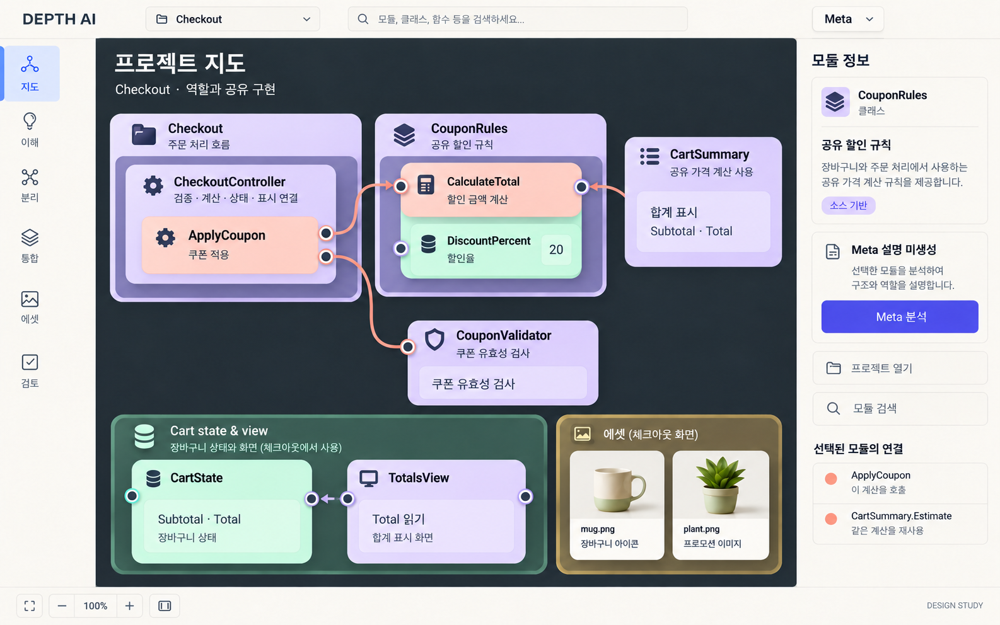
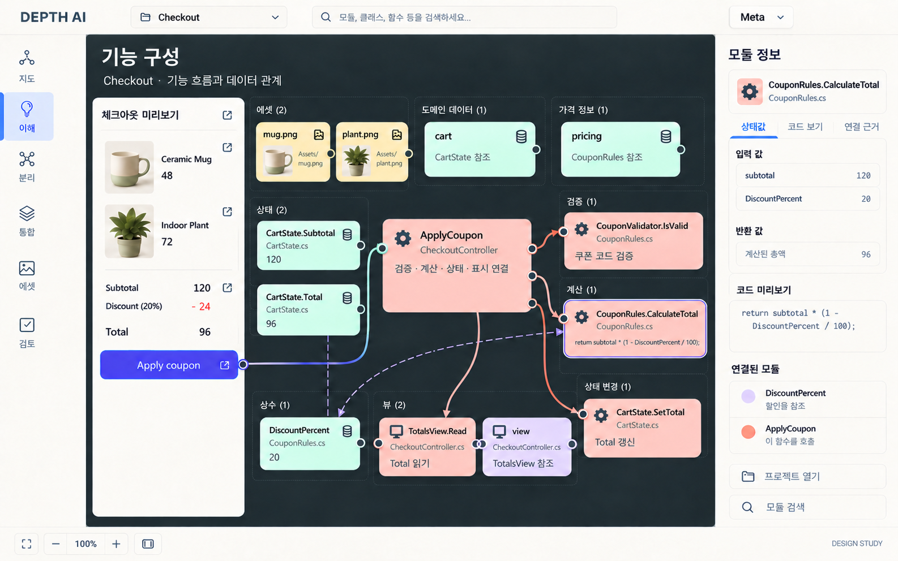
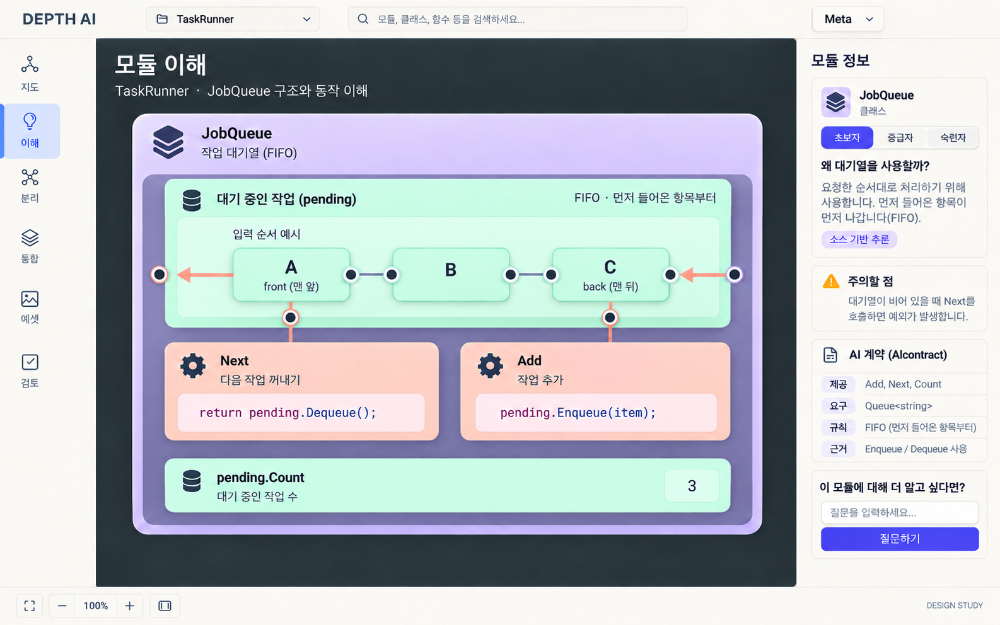
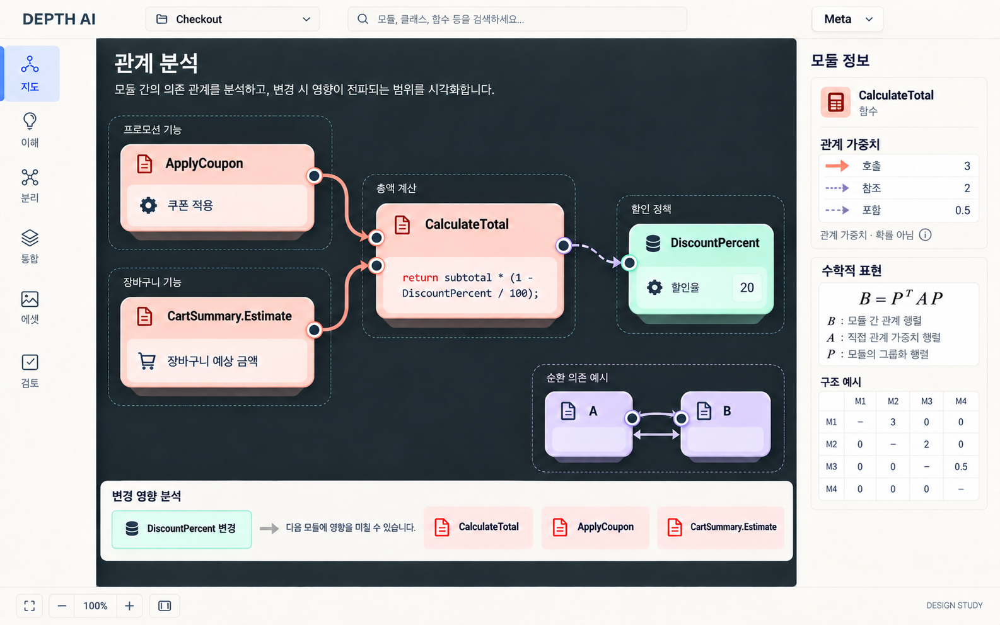
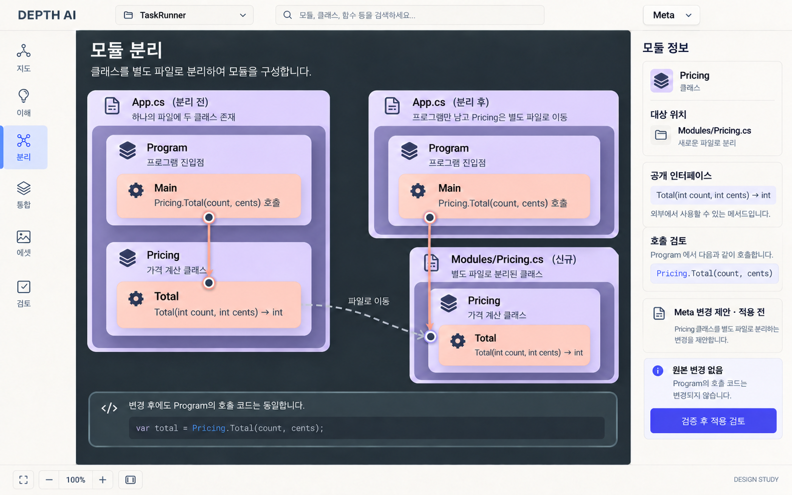
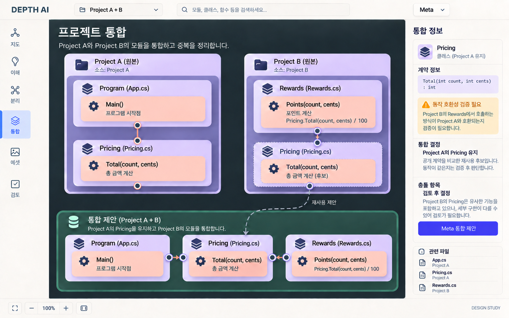
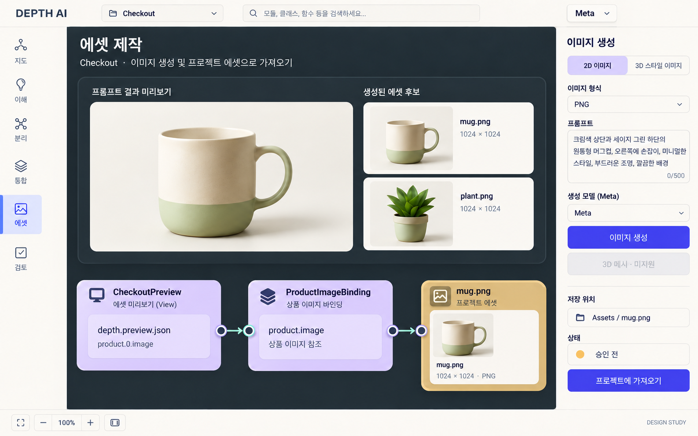
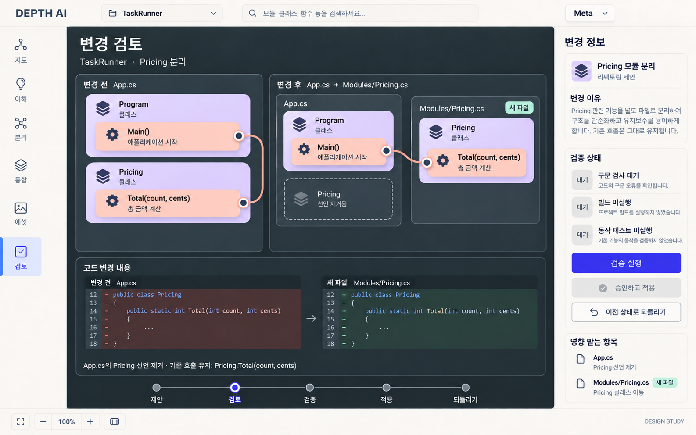

구현 전 디자인 시안입니다. 현재 앱 실행 화면이나 실제 Meta 응답이 아닙니다. 생성 이미지의 세부 픽셀·문자·선 경로는 최종 컴포넌트 구현에서 고정해야 합니다.
직전 시안의 기능은 유지하고, 같은 기준 화면을 공유해 외형과 재질을 맞춘 수정안입니다. 로고·메뉴·버튼·모듈·연결선과 프리뷰 에셋을 함께 정리했습니다.








구현 전 디자인 시안입니다. 현재 앱 실행 화면이나 실제 Meta 응답이 아닙니다. 생성 이미지의 세부 픽셀·문자·선 경로는 최종 컴포넌트 구현에서 고정해야 합니다.